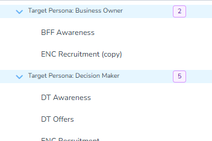
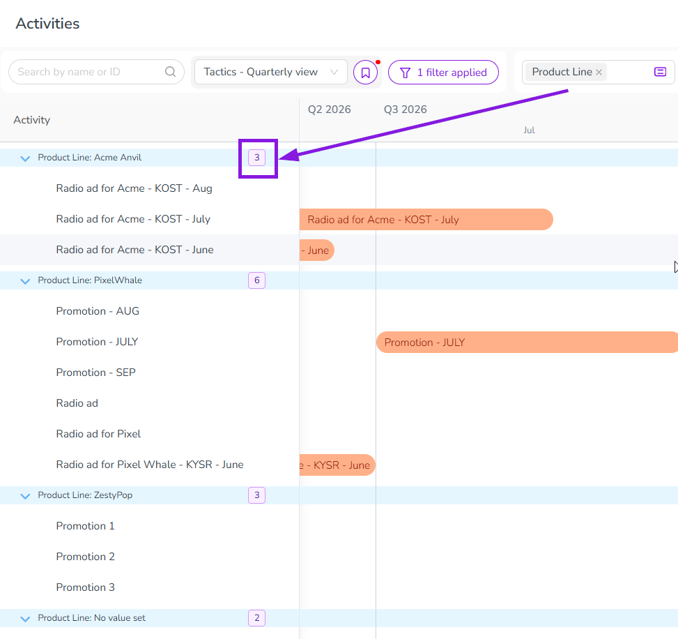
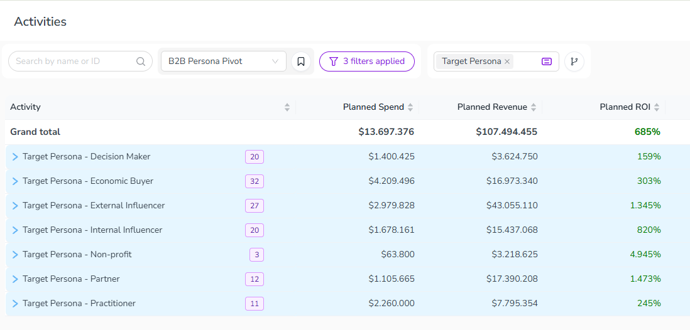
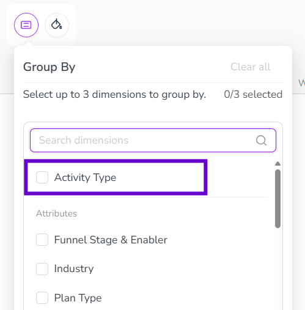
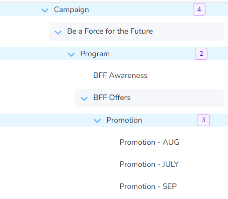
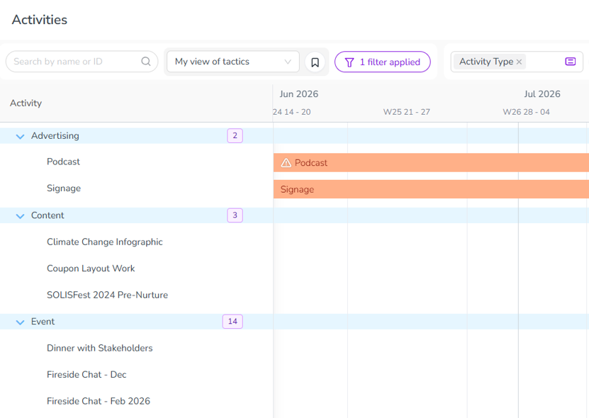
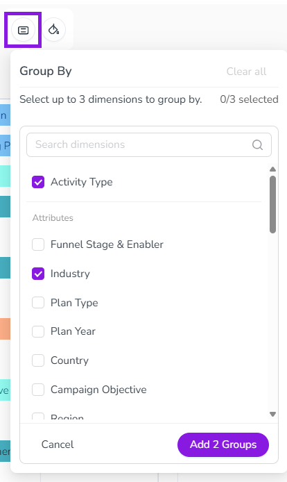
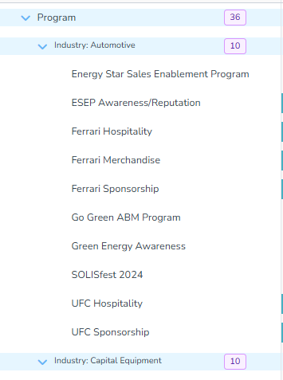

Group activities
By default, the activity hierarchy in Uptempo Campaign Management displays all activities that you have access to, at all levels of the hierarchy. To make a large activity hierarchy easier to work with, you can use grouping to adjust how they are displayed.
You can group activities together based on their selected value for a specified Activity Type, Drop-Down List, or Multi-Select List attribute. You can select up to three of these at once to build a multi-level grouping.
In the following example, a marketer needs to quickly see activities by Target Persona, so they group by that attribute.


Activities to which no value is assigned for a selected attribute are grouped under No value set.
View the number of activities in a group
Each group header row shows a badge with the number of activities that belong directly to that group. This count doesn't include activities in any nested subgroups. You'll see this badge for every group, including No value set, in both the Timeline and Summary display modes.




Group by activity type
Group your activities by type for easier navigation across the activity hierarchy.




This is especially handy when you have dozens of tactics and want to visually separate, for example, events from advertising from webinars from content.


Group by one or more dimensions
When you select more than one dimension, the order you select them in sets the nesting order of the groups; the first dimension you select becomes the outermost group. You can change this at any time by dragging a dimension to a new position in the list.
Group activities by one or more dimensions
Click
 Group Activities. The Group by panel opens.
Group Activities. The Group by panel opens.In the Search dimensions field, select the checkbox for Activity Type or any attribute you want to group by. You can select up to three dimensions; the panel shows how many you've picked.

Optional: To reorder your selected dimensions, drag one using the Order handle.
Click Add Groups to apply your selection. The button label reflects how many dimensions you've selected, for example Add 2 Groups.

The panel closes, and the activity hierarchy updates to show grouped rows for each dimension, nested in the order you selected them.


Remove grouping
To remove one dimension, click Remove on it in the Group by panel.
To remove all grouping at once, click Clear all in the Group by panel.